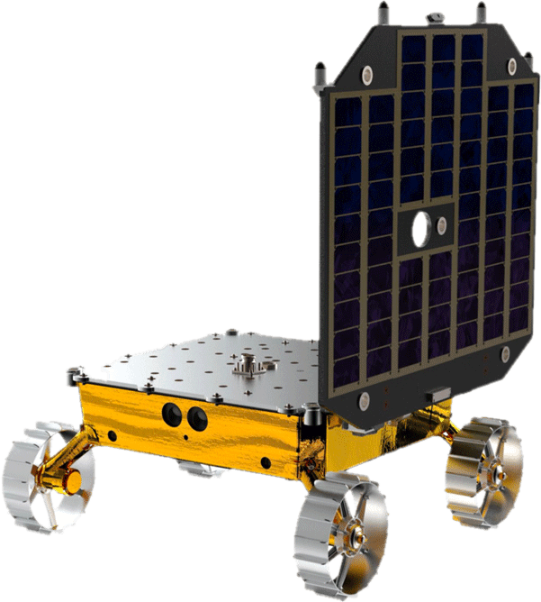
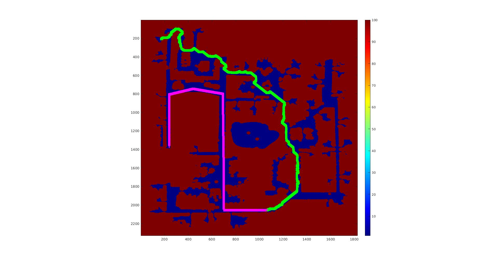
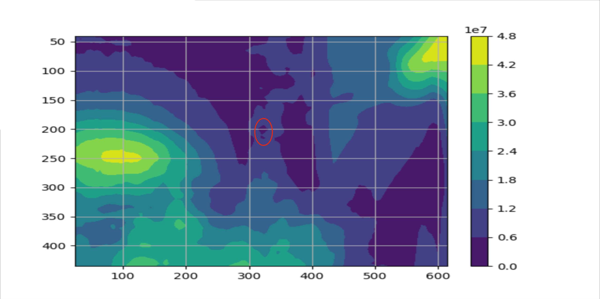

Carnegie Mellon University · 2020-2022
Carnegie Mellon University · 2020-2022
CMU projects.
Graduate robotics at Carnegie Mellon: research on robotic post-processing, plus core graduate coursework in computer vision and SLAM. My two biggest projects from this time, MoonRanger and Tripawd, have their own pages.

Graduate Research · CERLAB
Robotic post-processing of additive-manufacturing parts
Quality inspection of complex, custom 3D-printed parts,
the kind eventually needed for spacecraft and satellites. Coverage planning for a
robot arm and turntable so a line-scanner can fully scan an arbitrary object.

Space Robotics · CMU
MoonRanger: lunar micro-rover perception
Software perception for one of the first truly autonomous micro-rovers targeted for
the lunar surface. Worked on the stereo reconstruction pipeline, getting disparity
data saved and inspectable so failures could be debugged offline.

24-775 · Robot Design & Experimentation
Tripawd: the three-legged robot dog
A functional three-legged robot dog built to study how a tripod's natural gait
compares to a trajectory-optimized gait in cost of transport, on the same hardware,
with stability actively managed at every step.

16-720 · 6 mini projects
Computer vision mini projects
Six projects from CMU's graduate computer vision course: spatial pyramid scene
classification, augmented reality with planar homographies, Lucas-Kanade tracking,
two-view 3D reconstruction, neural networks for character recognition, and
photometric stereo.

Graduate Coursework · 4-person team
Diabetic retinopathy detection via CNN
Grading diabetic retinopathy from retinal photographs with AlexNet, ResNet50 and
VGG16. Detecting the disease turned out to be easy (98%) and grading its severity
hard (80%), so we broke the five-way problem into a cascade of binary classifiers
to find out why.

16-782 · 3 mini projects
Planning mini projects
Three searches over three different kinds of space: a grid, where the trick is
choosing which goal to aim at; a continuous high-DOF configuration space you can
only sample; and a space of logical facts where states are sets of conditions.

24-785 · Course project · 5-person team
Template alignment optimization
Lucas-Kanade tracking is a nonlinear least-squares problem solved once per frame,
so which optimizer should solve it? Gradient descent, Newton, Gauss-Newton, BFGS
and Levenberg-Marquardt raced against each other, explaining why the 1981 paper
chose what it did.

16-833 · 4 mini projects
SLAM mini projects
Four takes on the same problem: particle filter localization, EKF-SLAM, SLAM as a
sparse least-squares problem, and dense SLAM with point-based fusion. From
thousands of samples, to a single Gaussian, to batch linear algebra, to raw
geometry.

16-833 · Course project · 4-person team
Comparative analysis of visual and lidar SLAM
Setting up ORB-SLAM2, RTAB-Map and Google Cartographer in ROS and benchmarking them
against the same TUM data and four driving scenarios we generated in the CARLA
simulator. Every system degraded in dynamic environments; the interesting part is
how differently.